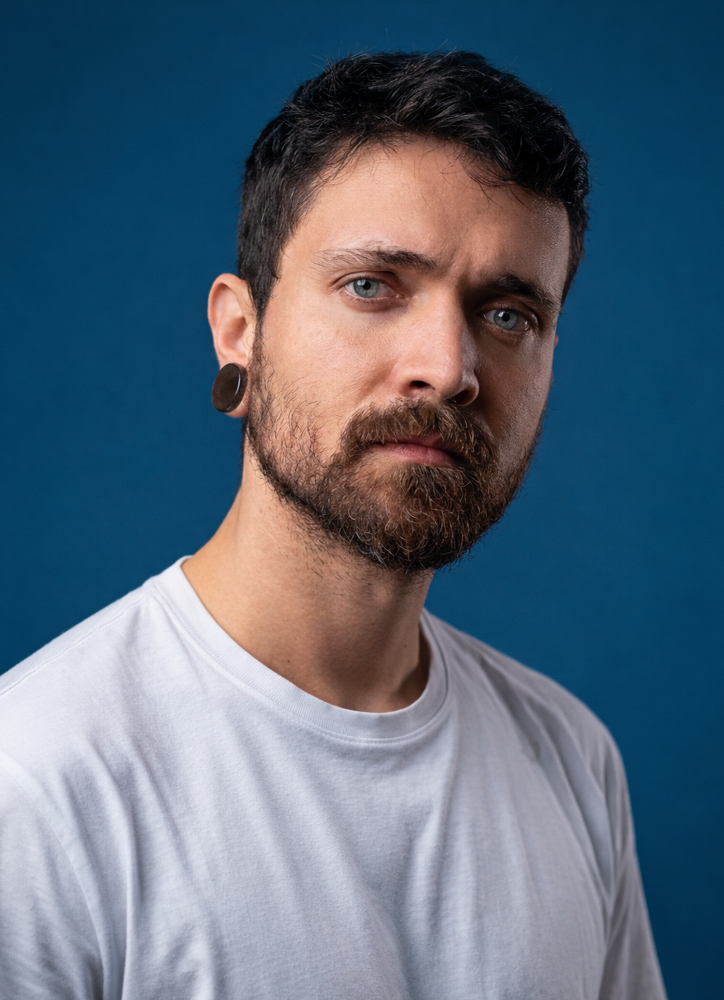

🇧🇷 Bambuí, MG 1991→🇧🇷 São Paulo, SP 1991–2023→🇧🇷 Bambuí, MG 2023–2025→🇦🇺 📍 Brisbane, QLD 2025–

Julio Cesar Prado da Silva
Graphic Designer · Social Media · Digital Curator · AI Student
Over a decade turning concepts into visual experiences. Six universes, one journey.
Graphic designer and content creator with over a decade of experience in visual communication. Specialised in editorial design, social media and content production — having created and laid out over 2,000 magazine editions, produced hundreds of social media post designs, developed over 100 logos, and played a central role in building the EdiCase Portal.
Holds a degree in Graphic Design from UNIP, with InDesign expertise. Photoshop, Illustrator, WordPress, video editing and social media management are also part of the toolkit. Currently living in Brisbane, Australia — expanding horizons and English vocabulary in equal measure. Formally studying AI at Greystone College.
Outside of work, he enjoys discussing ethics the way most people talk about sports. Also passionate about science communication, philosophy, existentialism, music, film, sports, games and humour.
Editorial · Identity · Typography · Print & Digital
Graphic design is not a job for Julio — it is the language he thinks in. Over a decade in editorial publishing, with 2,000+ magazines produced, sharpened his eye for visual hierarchy, typography and composition. His strength lies at the intersection of technical rigour and aesthetic sensibility: he can both execute and direct. Advanced-level InDesign with a proven track record of impact — including growing a client's social media following by 1,000% in two months — having created and laid out over 2,000 magazine editions, produced hundreds of social media post designs, developed over 100 logos, and played a central role in building the EdiCase Portal.
Art direction, layout, final approval and press-ready file delivery. Over 2,000 print and digital magazines produced across 11 years. The defining reference for volume and consistency in the career.
Visual content creation for social media — product photography layouts, promotional posts and branded assets for a gourmet food emporium in Morumbi, São Paulo. Focused on conveying the premium, artisanal character of the brand through consistent visual language across Instagram.
Development of institutional materials for print and digital. Grew the client's social media following by 10,000 (1,000%) in 2 months — a direct result of consistent design paired with content strategy.
Image editing for e-commerce, institutional materials and YouTube videos for a Brazilian sewing influencer. Freelance work focused on cohesive visual identity.
Bachelor's degree in Graphic Design with emphasis on visual communication. The theoretical and practical foundation of the entire professional career.
▼
02
Social Media & Content
Editorial · CMS · WordPress · Curation · Distribution
A natural editorial manager, Julio understands content as architecture: every piece has purpose, position and a relationship to the whole. He spent years organising and creating visual and written content — for companies, individuals and personal projects — operating across both visual execution and publishing strategy.
Hand-curated selection of the best design resources: tools, typography, UI/UX, branding, motion and visual culture. A thematic vertical within the BiblioVerse ecosystem.
Multi-thematic editorial platform covering AI, Design, Social Media, Coding, Language, Games and Music. Editorial management, content production and distribution strategy — a project that synthesises design, curation and technology.
Editorial management and evergreen content production distributed to Brazil's largest media portals: UOL, iG, MSN, R7, Terra and others. Central role in building and consolidating EdiCase's digital channel.
A listicle blog covering art, design, pop culture, geek topics, education, photography, music, politics and much more. Over 4 million page views. Long-form structured content production.
Digital magazine on veganism. Editorial management and content production for the Brazilian vegan audience over 4 years. One of the longest-running projects in the career.
Screenwriting techniques for film: storyline, premise, outline and full short-film script. Skills applied in video and narrative content production.
▼
03
Artificial Intelligence
Generative AI · AI Direction · AI Curation
He came to AI through design — and stayed for the philosophy that comes with it. An early adopter of creative automation, he now formally studies artificial intelligence at Greystone College in Brisbane, applying generative tools in editorial and curation work. His edge is not merely technical: he thinks about AI as an ethical, economic and epistemological question — which takes him well beyond surface-level tool use.
Hand-curated selection of the best AI tools, models, research and resources. From generative AI to algorithmic ethics — the essentials filtered with editorial rigour.
Diploma focused on AI fundamentals and practical applications: machine learning, neural networks, AI ethics and integration in professional contexts. Formal training in progress.
Eight-workshop online programme (8h total) by Google News Initiative, focused on the strategic use of AI tools to drive digital transformation and support the business of news organisations.
Introduction to AI and how it can be used to enhance business operations — applications, tools and strategic uses of artificial intelligence in organisations.
Before becoming a designer, he was a cashier, stocker, bartender, delivery rider, farmhand. A journey that built discipline, adaptability and respect for physical work. Every manual role was also a school of rhythm, presence and customer service. The Australian chapter added multicultural context: working in a kitchen, greenhouse and delivery run in a foreign city demands just as much as any creative challenge.
Chocolate sales associate at a supermarket stand during the Easter promotion. Direct consumer service and point-of-sale management.
▼
05
General Knowledge
Languages · Technology · Music · Core Education
A structural curious, Julio accumulates knowledge that doesn't fit a single specialty. He learns for pleasure and applies by instinct. His English — earned formally in Australia — went from Intermediate to Advanced 1 in under a year. Solid grounding in IT, practical coding skills, and a trajectory that has passed through music, film technique and a formal education that went a long way.
12-week intensive programme. Started at Intermediate 2 and finished at Advanced 1. Focus on fluency, advanced vocabulary and professional communication.
Basic and intermediate technique, applied music theory and varied repertoire. Interest in music as a parallel language to design — both are systems of expression.
▼
Study🇧🇷
Feb/06 → Nov/08
Secondary School (High School)
E.E. Antônio Inácio Maciel
Years 10, 11 and 12 of secondary school. Formative period in Bambuí, MG.
Animal Ethics · Moral Philosophy · Activism · Outreach
Ethics is the silent axis of the entire journey. For over a decade, Julio has investigated moral philosophy with the rigour of a scholar and the urgency of someone who believes what we think about the world determines what we do in it. Specialised in animal ethics, he has worked as a street activist, podcaster, visual activism designer and extension student at three universities. His interest is not merely theoretical: it is applied, communicated and lived.
Independent encyclopaedia of knowledge on animal issues in Portuguese: ethics, activism, philosophy and references. Info-activism as a tool for change.
20 episodes on animal ethics: sentience, speciesism, utilitarianism, animal rights and applied moral philosophy. Accessible yet rigorous philosophical outreach.
Extension course on the philosophical debate around the moral consideration of non-human animals: theoretical foundations, ethical schools and practical implications.
Cube of Truth: display of real footage of animal exploitation in public spaces in São Paulo, with direct public engagement to spark dialogue about veganism.